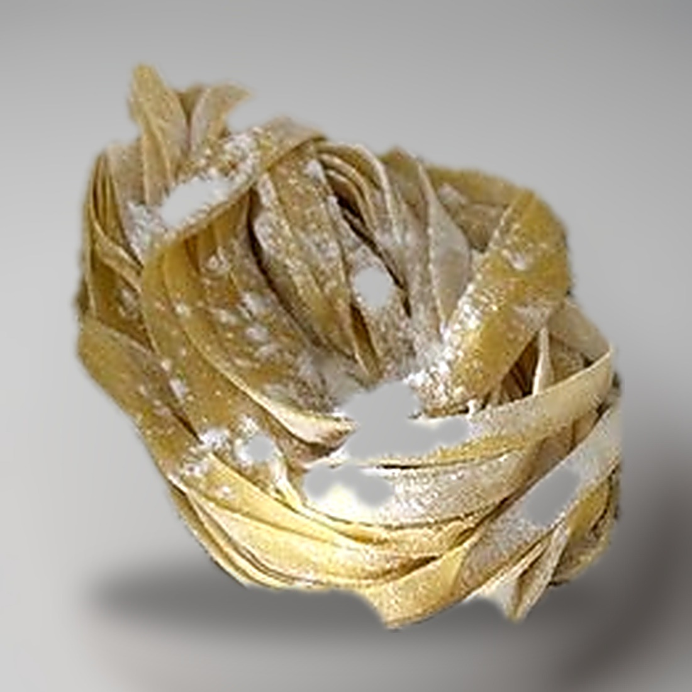

Pasta / Shapes
Fettuccine

- Dough
- Egg Dough
- Rest
- 20-30 min at room temperature
- Source
- Pasta, Missy Robbins
- Formed
- ribbon
- Region
- Central Italy, mainly Lazio
Method
- Make an egg-based dough, then roll and sheet it.
- Give a wooden work surface a light dusting of 00 flour. Line a sheet pan with parchment, then dust the parchment with semolina.
- Knife the sheets into 18-inch lengths and trim the ragged edges off. Save the trim for soup. Keep the sheets under plastic or a towel while you work.
- Fit the fettuccine cutter to a hand-crank machine or the KitchenAid attachment.
- Hold one end of a sheet, feed the other end into the cutter, and crank steadily, keeping the sheet close to perpendicular to the rollers. Catch the strands underneath with your free hand.
- Dust the cut strands generously with 00 flour and shake them apart. Coil the batch into a nest on the pan.
- Repeat with the rest of the sheets.
- Dry 20 to 30 minutes at room temperature.
- To hold, cover the pan with plastic and refrigerate up to 24 hours.
Notes
- To cut by hand instead of by machine: fold a sheet in half, then in thirds, into a packet roughly 4 1/2 by 6 inches. Turn it so the long side faces you, trim the ends, then slice 1/4-inch strips working inward from one edge. Rejoin the method at the dusting step.
- Hand-cut width is 1/4 inch. The book gives no separate figure for the machine cutter.
- Rolled to the same thinness as tagliatelle in this book. The two are told apart by width and by cut: fettuccine narrower and straight-edged, tagliatelle wider and fluted.
- Coiled into a nest rather than a horseshoe.
- Refrigerated shelf life is 24 hours.
- Served with butter, parmigiano, and black pepper, never cream, plus whatever vegetables or pantry items are on hand.